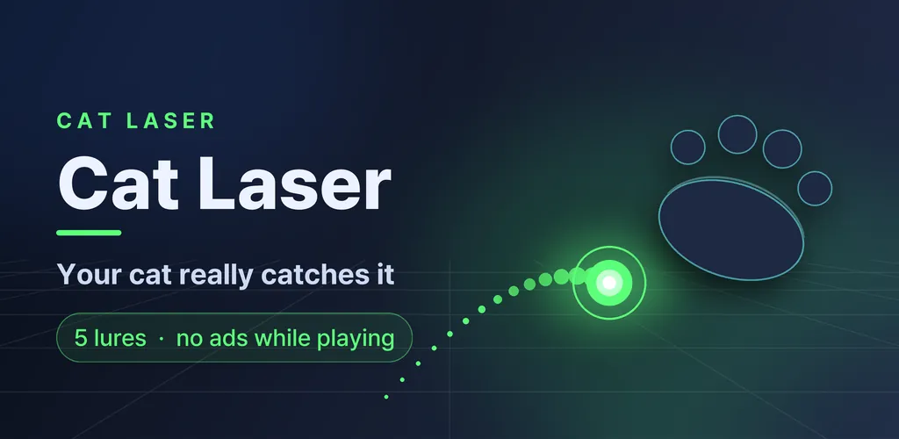
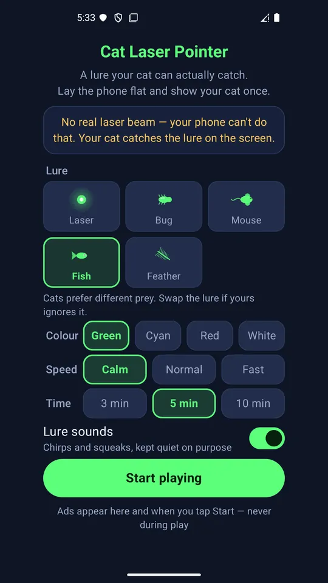
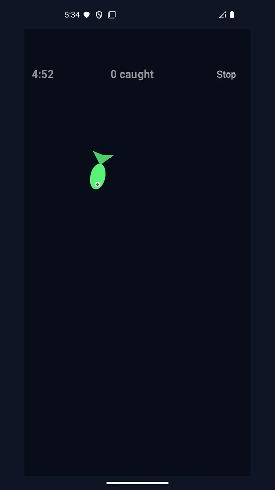
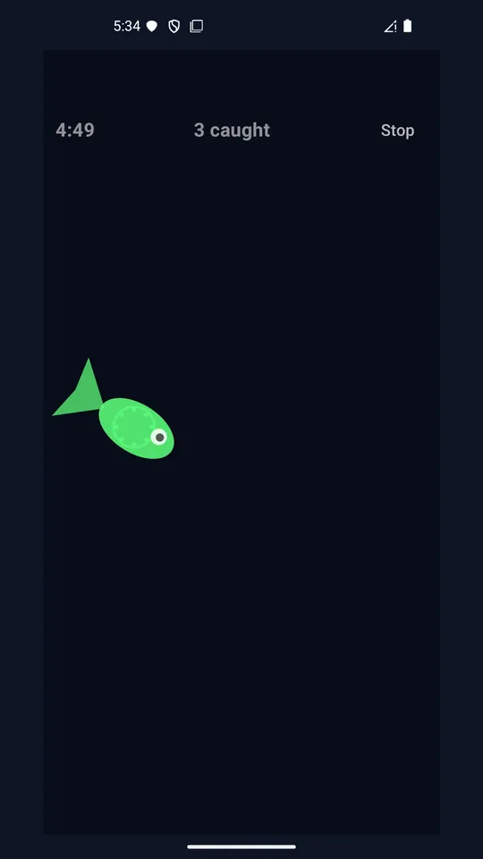
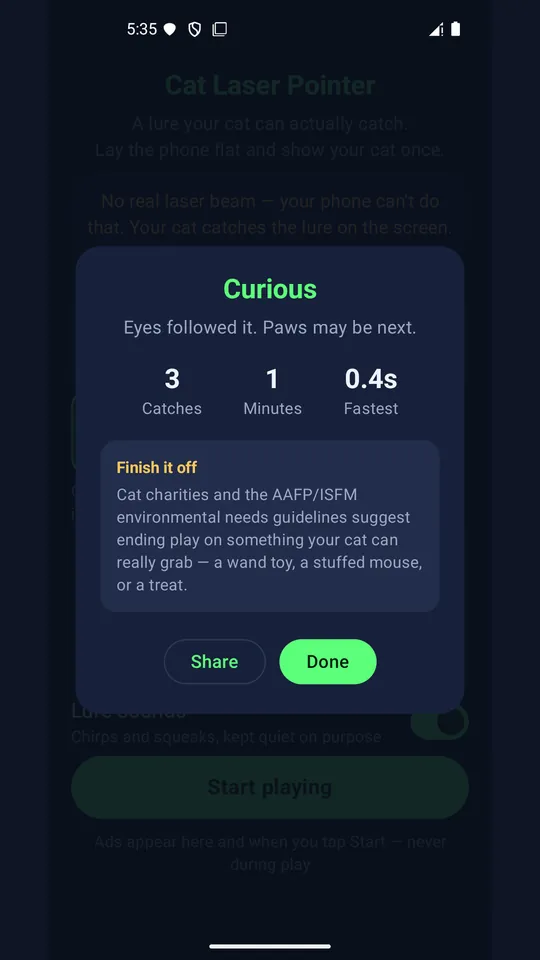
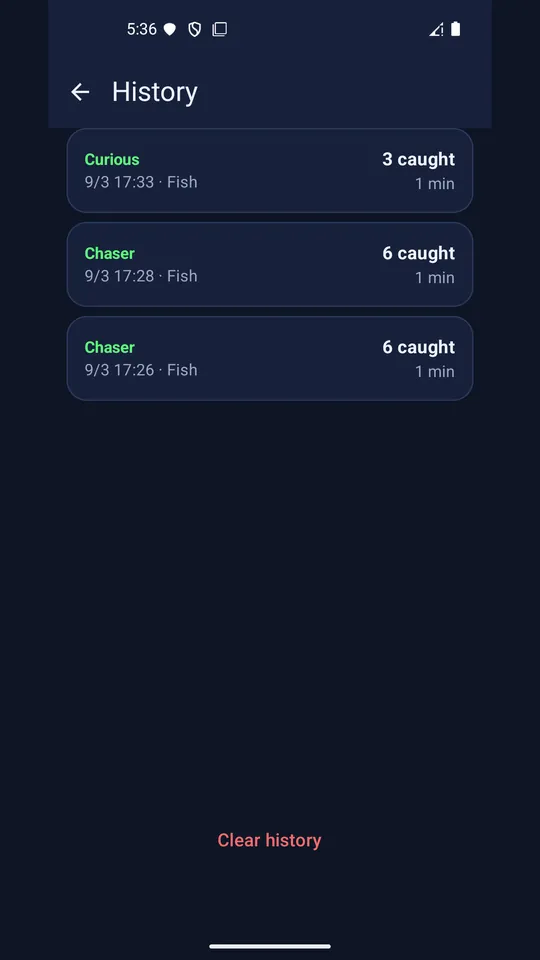
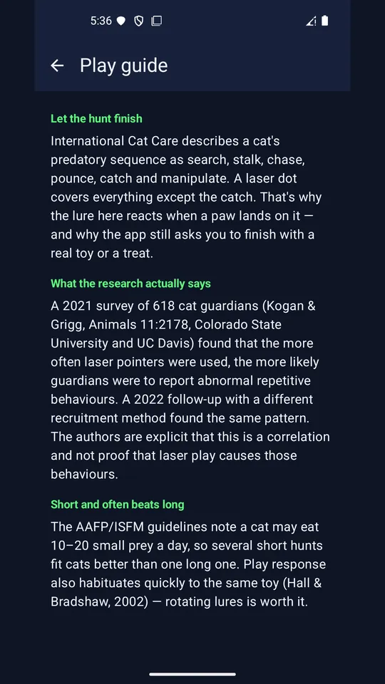

Cat Laser Pointer - Cat Toy
A cat laser pointer your cat can actually catch. Five lures, no ads during play.







About this app
A lure moves across the screen like prey. Your cat swats it, and this time the lure reacts and gets caught. That is the one thing a real cat laser pointer can never do.
A lure that can be caught
When a paw lands on the lure, it jolts, makes a sound and buzzes. Closing the hunt is where this app starts.
Five lures that move differently
Laser dot, bug, mouse, fish and feather. Some dart, some crawl. Switch between them and find out what your own cat goes for, because every cat toy works for some cats and not others.
Prey runs away
The lure heads away from wherever the paw just landed. It does not drift politely back to the middle of the screen.
Today's score
Every session records attempts, catches and reaction time. After a few days the history shows which lure your cat actually chases.
No ads while playing
The paw tapping that screen belongs to a cat. So the play screen carries no banner and no interstitial. Ads appear on the home screen and when you tap start.
Getting the most out of it
It works best on a tablet, or with the phone lying flat on the floor, screen up. Show your cat once. Most cats only need one demo. And finish the session with a physical toy or a treat your cat can really catch. The app reminds you when the session ends.
About your screen
If claws worry you, use a screen protector and turn the brightness down.
Internet permission is used only to display ads. No personal data is collected and play history stays on your device. This app makes no veterinary claims, and some cats simply will not take to screen play.
Android · free with ads · Developer: RealTunaLove · Store listing in 17 languages
Background story: why I built it